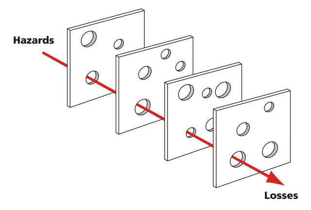
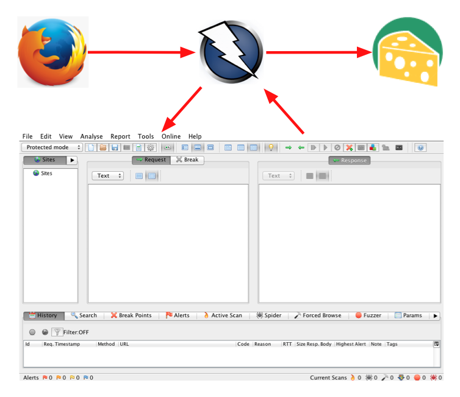
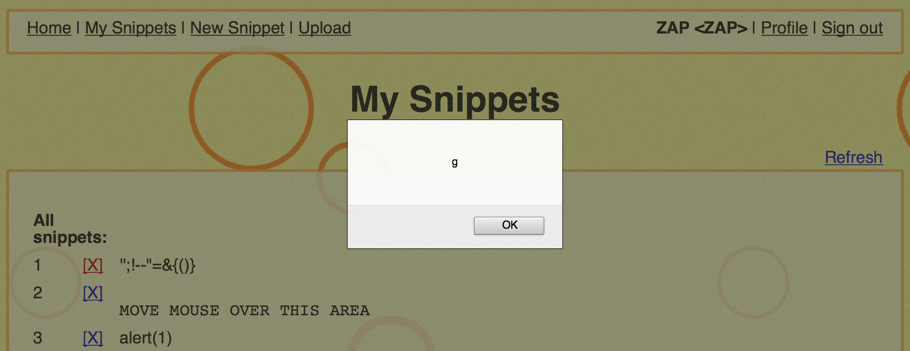
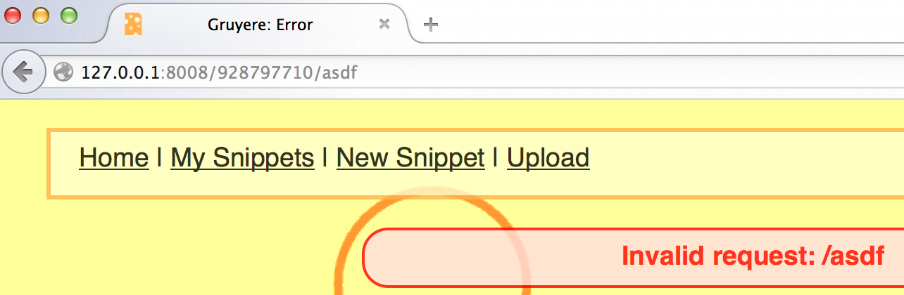

Introduction to Web Security Defence and Testing
Jeremy Stashewsky, Salesforce
Goals of this Talk
You know basically what I mean by "Web Security"
You've seen how I use an open-source testing tool
You get the gist of how to fix the bug we found
I've given you some ideas on where to explore next
Random Fun Security Facts!
How often is unknown malware downloaded?
source: Checkpoint Security 2014 Report
- A. about once every hour
- B. about once every thirty minutes
- C. about once every minute
- D. about once every two hours
- E. about once every second
In 2013, what was the source of most security incidents?
source: Verizon Data Breach Investigations Report 2014, top five in alphabetical order:
- A. Card Skimmers
- B. Cyber-espionage
- C. Insider Misuse
- D. Point-of-Sale Intrusions
- E. Web App Attacks
"Web Security"?
Web Security
is about...
Designing (Defenders)
Implementing (Builders)
and Testing (Attackers)
for a better WWW
Every website needs Security
and I don't just mean HTTPS
Security is a Quality
I can't give you 100 securities ;)
By analogy...
Pretend this is a website
![[latched drawer with drawer above closed]](drawer-closed.jpg)
Can you spot two things wrong?
Improper Security design
![[latched drawer with drawer above removed]](drawer-open.jpg)
Leads to information disclosure, impersonation, financial loss & more!
Security isn't easy
"please don't hack me"
Good Security takes LOTS of practice!
Important to start learning early
Danger: human mistakes!
Even with the best defenses, humans can mess it all up
"Swiss cheese model of accident causation" by Davidmack - Own work. CC-BY-SA 3.0 via Wikimedia Commons
{kind=link}
Learn by doing
![[latch removed with screwdriver]](defeated-lock.jpg)
Security is hard, let's go hacking!
Practice without harm
![[a small set of lock-picking tools from wikipedia]](wikipedia-lock-picks.jpg)
(In Canada, it's legal to own lock-picks, but illegal to possess "with the intention of committing a crime")
Warning
You should not attack any applications other than your own, and only do that with permission from the appropriate authorities (e.g. your company, your school)
Disclaimer
if you take something from this talk and do something irresponsible, I won't be held liable.
Be awesome and responsible :)
Let's Attack!
App, Tool, and Objective
The App
Gruere Codelab

The Tool
OWASP ZAP

(I've installed some add-ons to expand fuzz options)
What does the Gruyere website do?
- users create profiles
- users share snippets
- administrators can manage users
How We'll Work:
The Objective
Find a Cross-Site Scripting (XSS) vulnerability
X-what-now?
XSS = Cross-Site Scripting
(english-idiom: X = cross)
One of the easiest errors to make when building a web site
Roughly, XSS is when you can run JavaScript on someone else's page
Demo
(For those reading slides after the talk, be sure to set the Scope to http://localhost:8008 and then enter Protected mode)
... demo ...
(see also: gruyere-hints.md in this directory)
Snippet Vulnerability
"mouse-over" stored XSS
Homepage combo Vulnerability
Set homepage to "asdf"
(reflecting the thing not found?)
Effective Communication
Builders necessarily economize; so much to do, so little time
It's therefore crucial to make a compelling argument that something's worth fixing!
"Demo the exploit" is a powerful conversation tool
Showing the exploit
Store payload into "homepage"...
... trick user into clicking
Dangerous Homepage
Use the "Resend..." tool in ZAP to bypass form validation
Set this as the "homepage=" parameter
%253Cscript%253Eexfil%253Ddocument%252EcreateElement%2528%2522img%2522%2529%253Bexfil%252Esrc%253D%2522newsnippet2%253Fsnippet%253D%2522%252Bdocument%252Ecookie%253Bdocument%252Ebody%252EappendChild%2528exfil%2529%253B%253C%252Fscript%253E
Social Engineering 101
Make a snippet: "Click my homepage to win cashmoneydollars"
Result?
User's cookie posted as a snippet!
Defending against XSS
Focus: XSS
- The error page had a template slot
- the user-controlled value was placed there verbatim
- we were able to "break out" of HTML context into JavaScript context
- we were then able to obtain their session cookie (authentication)
Fixing Gruyere
(Live coding goes here... or explaining a pre-prepared patch)
(Essentially: add apostrophe to filter in gtl.py, add :text in error.gtl)
The Theory
XSS is caused by "breaking out" of one textual context into another
Parsers for a web page switch modes on certain control characters
Web languages provide syntax to "escape" those control characters
So, we escaped the problematic control characters!
HTML Control Characters
Well known: ", <, >, and &
Often overlooked: =, ' (apostrophe), !, /, and ` (backtick)
HTML Escaping
| Character | Encoding |
|---|---|
| " | " |
| < | < |
| > | > |
| & | & |
| ' | ' |
| generally: | &#xHHHH; |
Expanding on Escaping: block-list vs. allow-list
Briefly stated, theory is: escape control characters
This is a "block-list" approach
An "allow-list" approach can be more comprehensive
Block-lists
Start with "everthing's fine"
incrementally subtract; "this is not OK"
Benefits: easier to define
Problems: maintenance cost & missing important items
Allow-lists
Start with "trust nothing"
incrementally add; "this is verified OK"
Benefits: resilient to yet-unknown threats
Problems: sometimes over-matches & breaks functionality
In my opinion...
Be suspicious of block-list approaches
With a good team*, allow-list has less maintainance costs
* one that can consistently catch defects before they reach customers
Allow-listing applied to XSS
Alpha-numeric is usually safe
Escape everything else using &#xHHHH; syntax
Advanced Anti-XSS Techniques
Use a template language with automatic escaping
Use a template language with contextual escaping
Use Content-Security-Policy (a topic worth another talk)
Going Forward
Gruyere has more to offer!
For more challenges, try the Gruyere Codelab on your own!
Web Security Dojo
A free open-source self-contained training environment for Web Application Security penetration testing. Tools + Targets = Dojohttps://www.mavensecurity.com/web_security_dojo/
OWASP Top 10
https://www.owasp.org/index.php/Top_10_2013highlights:
- #1 - Injection (e.g. SQL injection)
- #2 - Broken Authentication & Session Management
- #3 - XSS
- #7 - Cross-Site Request Forgery (CSRF)
- ... in reality, there's much more than just 10
Mobile Security
Relative to the web, a nascent field!
Secure Development
Development strategies often focus on velocity
Need to stress: importance of threat modeling and secure coding practices
Career Paths
To generalize:
Attacker - paid to break into things
Defender - paid to make things less break-in-able
Builder - paid to ship a product, apply defenses
In conclusion...
Regardless of your career path...
security is relevant
you've just seen how easy it is to break into something
so it always pays to know how to defend
Thanks!
Contact me: "jstash" on twitter and gmail, "stash" on github